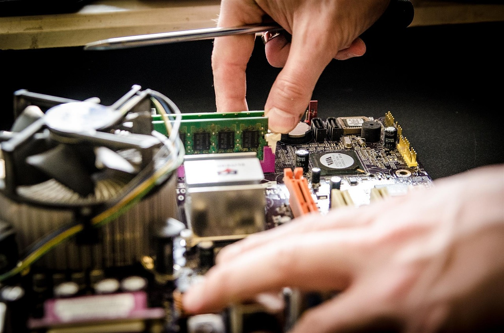
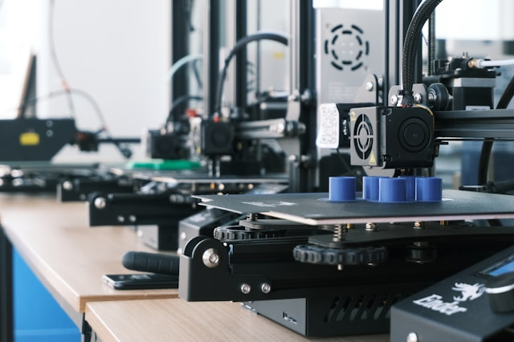
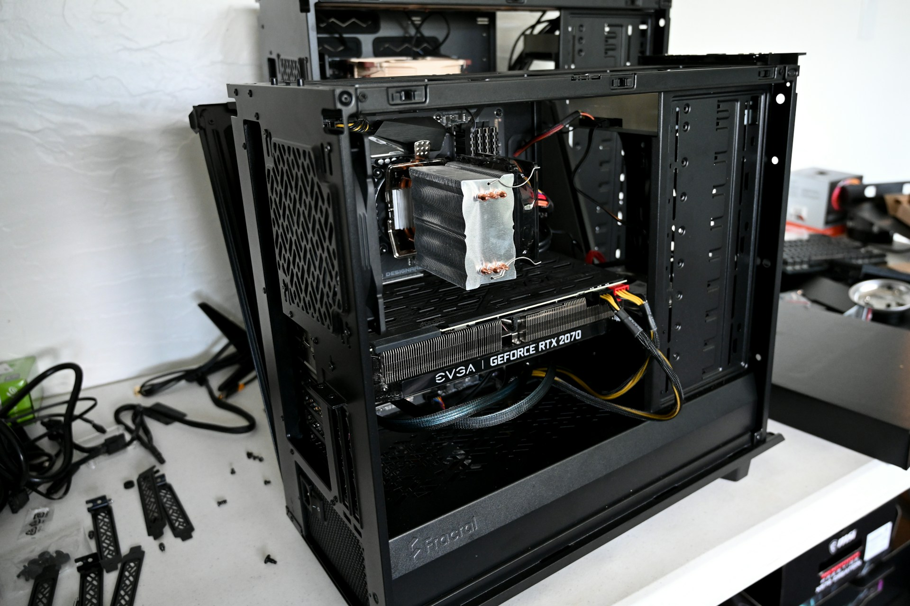

Welcome
My name is DJ, and I am a college student with a strong interest in computers, technology, and cybersecurity. I have always enjoyed learning how technology works and finding ways to solve problems using computers and other electronic devices. My goal is to continue building my technical skills through college, personal projects, and hands-on experience.
My Interests



Some of my main interests include:
- Building and working with computers
- Learning about computer hardware and software
- Exploring different areas of information technology
- Working on technology-related projects outside of school
- Learning through hands-on experimentation and problem solving
Outside of my college coursework, I enjoy several different hobbies and interests that involve technology and hands-on projects. I like working on computers, experimenting with electronics, learning about cars, and working with 3D printing. These hobbies give me a chance to learn through experimentation and problem solving rather than only learning from a textbook. I also enjoy discovering new technologies and understanding how they can be used to create useful or interesting projects.
My Educational Goals
I am currently earning an Associate in Science in Network Systems Technology here at State College of Florida. My studies are helping me develop a foundation in networking, computers, and information technology while giving me a better understanding of how different systems communicate and work together. After completing my associate degree, I plan to transfer to Florida Polytechnic University in Lakeland to pursue a bachelor's degree in Computer Science.
My long-term goal is to continue developing my technical knowledge and use my education to build a career working with computers and technology. I plan to continue developing my skills in programming, networking, cybersecurity, and other areas of computer science.
I am looking forward to learning more about HTML and web development and adding these skills to my technology background. Building this website is giving me an opportunity to understand how web pages are created while also creating something that can eventually become part of my professional portfolio.
Useful Technology Resource
One website I find useful for learning about technology and computer science is W3Schools. It provides tutorials and examples for HTML, CSS, JavaScript, and other technologies that can be useful as I continue learning web development.
Jump to My Interests
Jump to Educational Goals
Jump to Contact Information